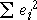

Problems with residuals as indicators of outliers
All data points pull the least squares line towards themselves — the line is positioned to minimise the sum of squares of the residuals
minimise 
Large residuals pull very strongly on the line since they are squared in the least squares criterion. As a result,
Outliers will strongly pull the least squares line towards themselves, making their residuals smaller than you might otherwise expect.
Leverage
If an outlier corresponds to an x-value near its mean, it usually will have a large residual,
However if the outlier occurs at an extreme x-value, it has a stronger influence on the position of the least squares line than the other data points. Such points are called high leverage points and pull the least squares line strongly towards them. Outliers that are high leverage points may therefore result in residuals that do not stand out from the other residuals.